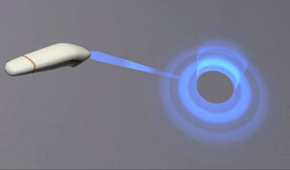

{{APIRef("WebXR Device API")}}
The read-only {{domxref("XRInputSource")}}
property targetRayMode indicates the method by which the
target ray for the input source should be generated and how it should be presented to
the user.
Typically a target ray is drawn from the source of the targeting system along the target ray in the direction in which the user is looking or pointing. The style of the ray is generally up to you, as is the method for indicating the endpoint of the ray. The targeted point or object might be indicated by drawing a shape or highlighting the targeted surface or object.
A target ray emitted by a hand controller:

The target ray can be anything from a simple line (ideally fading over distance) to an animated effect, such as the science-fiction "phaser" style shown in the screenshot above.
let rayMode = xrInputSource.targetRayMode;
A string indicating which method to use when generating and presenting the target ray to the user. The possible values are:
gazescreentracked-pointerThe input source's {{domxref("XRInputSource.targetRaySpace", "targetRaySpace")}} indicates the position and orientation of the target ray, and can be used to determine where to render the ray.
This fragment of code shows part of a function to be called once every frame. It looks for inputs which have a non-null {{domxref("XRInputSource.targetRaySpace", "targetRaySpace")}}. Inputs which have a value for this property represent inputs that project a target ray outward from the user.
For each such input, this example looks for inputs whose {{domxref("XRInputSource.targetRayMode", "targetRayMode")}} is tracked-pointer, indicating that the input is in fact intended to represent a targeting device rather than a gazing device, screen tap, or mouse click. For tracked pointers, a function myRenderTargetRayAsBeam() is called to render a beam from the input controller's virtual position outward in the direction it's pointing.
The code should continue to perform tasks such as drawing controllers or any objects representative of the user's hands' positions in the virtual space, as well as any other input-related tasks.
function updateInputSources(session, frame, refSpace) {
for (let source of session.getInputSources()) {
let targetRayPose = frame.getPose(inputSource.targetRaySpace, refSpace);
if (targetRayPose) {
if (source.targetRayMode == "tracked-pointer") {
myRenderTargetRayAsBeam(targetRayPose);
}
}
/* ... */
}
}
See the article Inputs and input sources for more details and a more complete example.
{{Compat}}